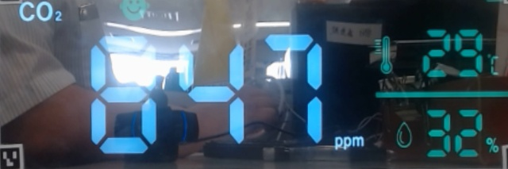
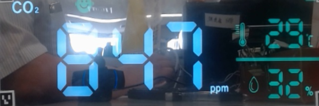

画像処理後
| カメラ画像（1分ごとに更新） |
|---|
| 元画像 画像処理後 |
| {% for i in range(24) %} | {{i}}時 | {% endfor %}
|---|---|
| 天気 | {% for i in range(24) %}{% endfor %} |
| 降水量 | {% for i in range(24) %}{% endfor %} |
| 温度 | {% for i in range(24) %}{% endfor %} |
| 湿度 | {% for i in range(24) %}{% endfor %} |
| 風量 | {% for i in range(24) %}{% endfor %} |